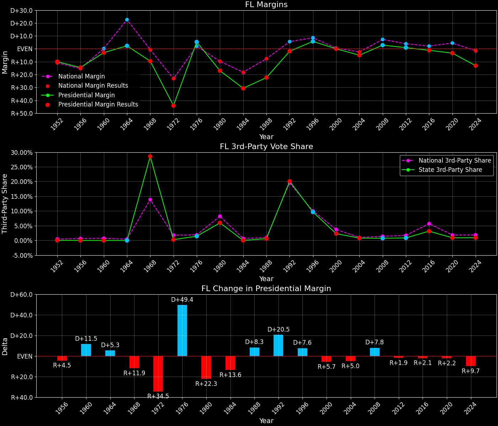
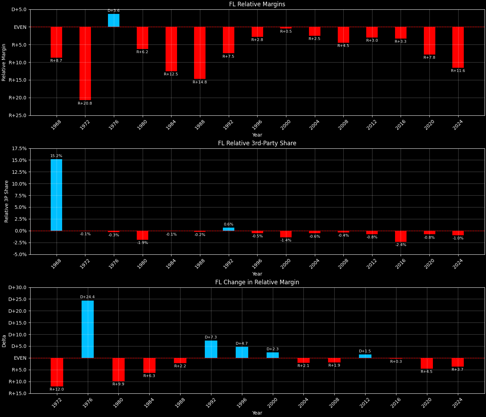
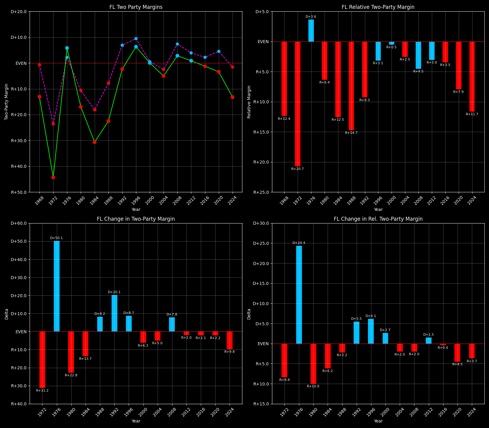

← Back to Map

Margins · 3P share · Pres. deltas

Relative margins · Relative 3P · Rel. deltas
Florida (FL) — Total Data
| Year | EVs | D | R | Margin | Rel. Margin | Nat. Margin | Margin Δ | Rel. Margin Δ | Nat. Margin Δ | Total votes |
|---|
| 1968 | 14 | 664,193(31.0%) | 863,405(40.3%) | R+9.3 | R+8.7 | R+0.6 | | | | 2,143,613 |
| 1972 | 17 | 712,760(27.9%) | 1,845,942(72.1%) | R+44.3 | R+20.8 | R+23.5 | R+35.0 | R+12.0 | R+23.0 | 2,558,702 |
| 1976 | 17 | 1,598,398(52.9%) | 1,422,405(47.1%) | D+5.8 | D+3.6 | D+2.2 | D+50.1 | D+24.4 | D+25.7 | 3,020,803 |
| 1980 | 17 | 1,424,667(39.4%) | 2,008,306(55.5%) | R+16.1 | R+6.2 | R+9.9 | R+22.0 | R+9.9 | R+12.1 | 3,616,599 |
| 1984 | 21 | 1,439,282(34.7%) | 2,712,061(65.3%) | R+30.7 | R+12.5 | R+18.1 | R+14.5 | R+6.3 | R+8.2 | 4,151,343 |
| 1988 | 21 | 1,656,701(38.7%) | 2,618,885(61.3%) | R+22.5 | R+14.8 | R+7.7 | D+8.2 | R+2.2 | D+10.4 | 4,275,586 |
| 1992 | 25 | 2,071,651(39.1%) | 2,171,781(41.0%) | R+1.9 | R+7.5 | D+5.6 | D+20.6 | D+7.3 | D+13.3 | 5,295,913 |
| 1996 | 25 | 2,545,690(48.3%) | 2,242,951(42.5%) | D+5.7 | R+2.8 | D+8.6 | D+7.6 | D+4.7 | D+3.0 | 5,272,402 |
| 2000 | 25 | 2,903,416(48.9%) | 2,901,229(48.9%) | D+0.0 | R+0.5 | D+0.5 | R+5.7 | D+2.3 | R+8.0 | 5,938,753 |
| 2004 | 27 | 3,584,369(47.4%) | 3,962,527(52.4%) | R+5.0 | R+2.5 | R+2.5 | R+5.0 | R+2.1 | R+3.0 | 7,567,906 |
| 2008 | 27 | 4,281,897(50.9%) | 4,045,801(48.1%) | D+2.8 | R+4.5 | D+7.3 | D+7.8 | R+1.9 | D+9.7 | 8,409,207 |
| 2012 | 29 | 4,237,757(50.0%) | 4,163,446(49.1%) | D+0.9 | R+3.0 | D+3.9 | R+1.9 | D+1.5 | R+3.4 | 8,474,134 |
| 2016 | 29 | 4,504,973(47.8%) | 4,617,886(49.0%) | R+1.2 | R+3.3 | D+2.1 | R+2.1 | R+0.3 | R+1.8 | 9,419,885 |
| 2020 | 29 | 5,285,516(47.8%) | 5,659,054(51.2%) | R+3.4 | R+7.8 | D+4.4 | R+2.2 | R+4.5 | D+2.3 | 11,061,107 |
| 2024 | 30 | 4,683,038(43.0%) | 6,110,125(56.1%) | R+13.1 | R+11.6 | R+1.5 | R+9.7 | R+3.7 | R+6.0 | 10,893,752 |
Column explanations
- Year
- Election year.
- EVs
- Number of electoral votes allocated to this state or unit.
- D
- Number of votes for the Democratic candidate (raw count(pct%)).
- R
- Number of votes for the Republican candidate (raw count(pct%)).
- Margin
- Margin between the two major-party candidates, including third-party votes ((D - R)/total).
- Rel. Margin
- The presidential margin relative to the national presidential margin (Margin - Nat. Margin).
- Nat. Margin
- The national presidential margin for that year, including third-party votes ((D_total - R_total)/total_votes).
- Δ
- Change (delta) in the value from the previous election year. Blank if no data for previous year.
- Total votes
- Total voter turnout or ballots cast (when provided).
Florida (FL) — Third-Party Data
| Year | Other votes | 3rd Party Share | 3rd Party Nat. Share | 3rd Party Rel. Share |
|---|
| 1968 | 616,015(28.7%) | T+28.7 | T+13.6 | T+15.2 |
| 1972 | 0(0.0%) | | T+0.1 | T-0.1 |
| 1976 | 0(0.0%) | | T+0.3 | T-0.3 |
| 1980 | 183,626(5.1%) | T+5.1 | T+7.0 | T-1.9 |
| 1984 | 0(0.0%) | | T+0.1 | T-0.1 |
| 1988 | 0(0.0%) | | T+0.2 | T-0.2 |
| 1992 | 1,052,481(19.9%) | T+19.9 | T+19.2 | T+0.6 |
| 1996 | 483,761(9.2%) | T+9.2 | T+9.7 | T-0.5 |
| 2000 | 134,108(2.3%) | T+2.3 | T+3.7 | T-1.4 |
| 2004 | 21,010(0.3%) | T+0.3 | T+0.8 | T-0.6 |
| 2008 | 81,509(1.0%) | T+1.0 | T+1.4 | T-0.4 |
| 2012 | 72,931(0.9%) | T+0.9 | T+1.6 | T-0.8 |
| 2016 | 297,026(3.2%) | T+3.2 | T+5.5 | T-2.4 |
| 2020 | 116,537(1.1%) | T+1.1 | T+1.8 | T-0.8 |
| 2024 | 100,589(0.9%) | T+0.9 | T+1.9 | T-1.0 |
Column explanations
- Year
- Election year.
- Other votes
- Number of votes for third-party (other) candidates (raw count(pct%)).
- 3rd Party Share
- Share of the vote received by third-party (other) candidates.
- 3rd Party Nat. Share
- The national third-party share for that year (3P votes / total votes).
- 3rd Party Rel. Share
- Third-party share relative to the national third-party share (3P share - Nat. 3P share).

Two-party margins · relative · deltas
Florida (FL) — Two-Party Data
| Year | 2-Party Margin | 2-Party Nat. Margin | 2-Party Rel. Margin | 2-Party Margin Δ | 2-Party Nat. Margin Δ | 2-Party Rel. Margin Δ |
|---|
| 1968 | R+13.0 | R+0.7 | R+12.4 | | | |
| 1972 | R+44.3 | R+23.6 | R+20.7 | R+31.2 | R+22.9 | R+8.4 |
| 1976 | D+5.8 | D+2.2 | D+3.6 | D+50.1 | D+25.8 | D+24.4 |
| 1980 | R+17.0 | R+10.6 | R+6.4 | R+22.8 | R+12.8 | R+10.0 |
| 1984 | R+30.7 | R+18.1 | R+12.5 | R+13.7 | R+7.5 | R+6.2 |
| 1988 | R+22.5 | R+7.8 | R+14.7 | D+8.2 | D+10.4 | R+2.2 |
| 1992 | R+2.4 | D+6.9 | R+9.3 | D+20.1 | D+14.7 | D+5.5 |
| 1996 | D+6.3 | D+9.5 | R+3.1 | D+8.7 | D+2.6 | D+6.1 |
| 2000 | D+0.0 | D+0.5 | R+0.5 | R+6.3 | R+8.9 | D+2.7 |
| 2004 | R+5.0 | R+2.5 | R+2.5 | R+5.0 | R+3.0 | R+2.0 |
| 2008 | D+2.8 | D+7.4 | R+4.5 | D+7.8 | D+9.8 | R+2.0 |
| 2012 | D+0.9 | D+3.9 | R+3.0 | R+2.0 | R+3.4 | D+1.5 |
| 2016 | R+1.2 | D+2.2 | R+3.5 | R+2.1 | R+1.7 | R+0.4 |
| 2020 | R+3.4 | D+4.5 | R+7.9 | R+2.2 | D+2.3 | R+4.5 |
| 2024 | R+13.2 | R+1.6 | R+11.7 | R+9.8 | R+6.1 | R+3.7 |
Column explanations
- Year
- Election year.
- 2-Party Margin
- Margin between the two major-party candidates, ignoring third-party votes ((D - R)/(D + R)).
- 2-Party Nat. Margin
- The national presidential margin for that year, including third-party votes ((D_total - R_total)/total_votes).
- 2-Party Rel. Margin
- The presidential margin relative to the national presidential margin (Margin - Nat. Margin).
- Δ
- Change (delta) in the value from the previous election year. Blank if no data for previous year.